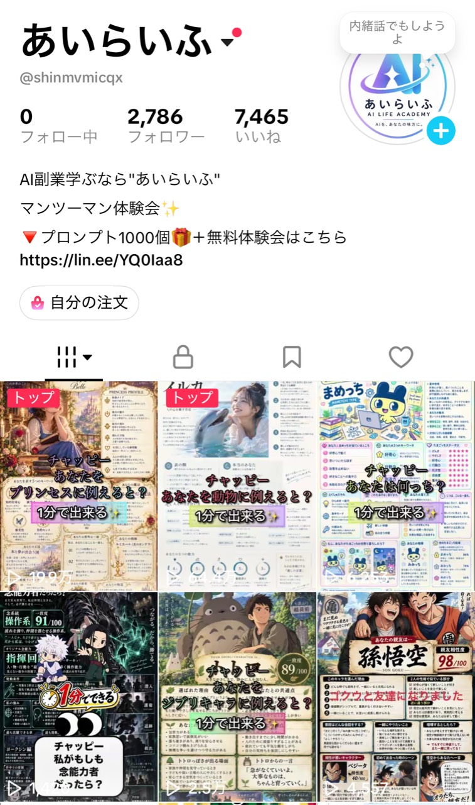
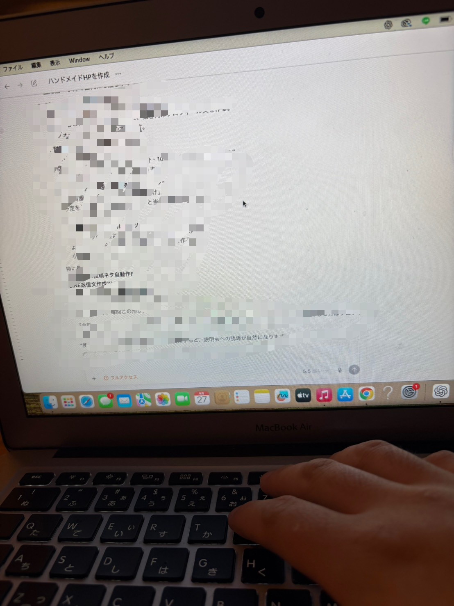

CASE 01
SNS発信 × AI
頭の中のアイデアを、
人が思わず試したくなる投稿へ。
65万回再生20万回再生
企画、プロンプト、画像、見せ方をAIと一緒に組み立て、エンタメとして楽しめる投稿を制作。AIは「作る時間を短くする」だけでなく、反応を見ながら企画を改善するところまで活用できます。
- 以前
- 何を投稿するかで止まる
- AI活用後
- 企画から投稿まで一つの流れに

AI LIFE MEMBERS' WORKS
FROM FUN TO SKILL
REAL STORIES
横にスワイプ。タップでストーリーを見る。
※掲載内容はご提供いただいた個別の実績・感想です。成果には取り組み方や環境による個人差があり、同様の成果を保証するものではありません。
知識ゼロから。 自分に合う使い方を見つけただけ。
私の可能性を見る →HOW AI CHANGES WORK
SNS発信 × AI
企画、プロンプト、画像、見せ方をAIと一緒に組み立て、エンタメとして楽しめる投稿を制作。AIは「作る時間を短くする」だけでなく、反応を見ながら企画を改善するところまで活用できます。

文章、構成、デザイン、修正、公開までをAIと対話しながら進行。外注する前に、自分で試作品を作って改善できるようになります。
予約受付、顧客情報の整理、案内文の作成など、毎回手で行っていた作業を整理。人にしかできない対応へ時間を使えるようにします。
BUSINESS CASE
AIだけで自動的に収入が生まれたわけではありません。自分の経験やサービスにAIを組み合わせ、提案・制作・改善の速度を上げた結果です。体験会では、何にAIを使い、どのように仕事へつなげたのかを具体的にお見せします。
※運営者の実例です。成果には個人差があり、同様の成果を保証するものではありません。THE GAP IS GROWING
AIは毎月のように進化しています。ただし、すべてを追いかける必要はありません。大切なのは、自分の生活や仕事に必要な使い方を一つずつ身につけることです。
半年後に「あのとき始めておけば」と思わないために、まず一度、実際に動くところを見てください。
FREE AI EXPERIENCE
難しい説明を聞くだけの会ではありません。ChatGPTやCodexが、文章・企画・Web制作・仕事の流れをどう変えるのか、画面を見ながら実演します。
FAQ
大丈夫です。質問するだけで使っている方にも分かるよう、画面を見せながら順番に説明します。
参加できます。日常や仕事の時短、自分のアイデアを形にする用途も含め、目的に合う使い方を一緒に考えます。
ありません。まずAIで何ができるのかを知り、ご自身に必要かどうかをご判断ください。